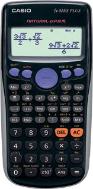
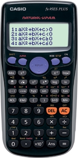
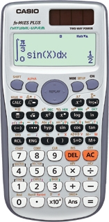
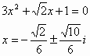

WebCal 計數機網頁
CASIO ES PLUS系列計算機簡介
|  |  |  |
| fx-82ES PLUS | fx-95ES PLUS | fx-991ES PLUS |
編寫日期: 2008年7月24日
CASIO ES PLUS系列與舊ES 系列一樣都是選用數學自然顯示 (NATURAL V.P.A.M. natural textbook display format)，亦即是數值為分數或平方根等算式或符號，都可以切換 為一般教科書的排列位置、顯示形式(輸入算式及答案)，提供更加直覺式的操作介面，因此更容易了解，理應很適合中學使用，不過由於使用圓點顯示形式(Dot matrix)，全部ES系列計數機均不獲香港考評局接納為會考准用計算機。
ES PLUS及舊ES系列計算機功能大致相同，舊有的功能這裡不再重述，若需要比詳細了解，可以參考CASIO ES系列及fx-991ES簡介資料，ES PLUS系列新加入功能分述如下:
(A) 整數隨機數值
所有ES PLUS系列的計算機都加入了這個新功能，可以指定整數隨整數出現的範圍，例如: Ran#(1, 6) 可以隨機產生1至6的整數，這個功能對於進行統計抽樣調查會相當方便。其實這個功能不算是一個很新及特別的功能，其它計算機(例如: CITIZEN SRP-285II, HP-30S 及CANON F-715S)都有這個功能，CASIO現在才在ES PLUS科學計算機加入這項功能，這方面似乎比較慢了一點。
(B) 新方程式模式
只有fx-95ES PLUS、fx-570ES PLUS及fx-991ES PLUS擁有新方程式模式，舊方程式模式在計算一元二次方程及一元三次方程時，答案會以小數形式顯示，新模式下答案可以使用平方根及分數形式顯示，例如以下方程的根:

(C) 比值計算
這個功能只有fx-95ES PLUS才有，可以計算簡單比例中的未知數x，計算的形式有兩種，分別為 a:b=x:d及a:b=c:x，例如: 2:3=x:6，比值功能可以求得答案x=4。雖然這是一個很新功能，我亦未見過有其它計算機有這項功能，不過這類簡單的比值計算，是否真的需要使用計算機的比值功能進行計算呢？簡單公式變換，使用計算機簡單乘除運算，計算速度應該會使用新比值功能更快，不知CASIO是否認為學生對計算比值問題有困難？我認為這個新功能不是一個太實用的功能。
(D) 不等式計算
這個功能只有fx-95ES PLUS才有，是一個很新的計算機功能(其它計算機沒有)，可以解一元二次不等式或者解一元三次不等式，例如: 計算 x2 - 7x + 12≦0，這個功能可以找出解答為 3≦x≦4，相信這類計算問題在大多中學課程都會有，是一個頗實用的功能。
(E) 質因子分解
只有fx-82ES PLUS、fx-85ES PLUS、fx-95ES PLUS及fx-350ES PLUS擁有質因子分解功能，是一個很新的計算機功能(其它計算機沒有)，可以將一個整數轉變為質因子連乘式的形式，例如: 可以將100變為22 × 52 表示，這是一個頗實用的功能。
其它參考資料:
http://edu.casio.com/products/spec/adves_ntd/